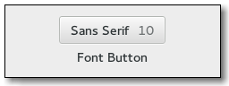

Gtk.FontButton
Example
Methods
| Inherited: | Gtk.Button (29), Gtk.Bin (1), Gtk.Container (27), Gtk.Widget (256), GObject.Object (33), Gtk.Buildable (10), Gtk.Actionable (5), Gtk.Activatable (6), Gtk.FontChooser (12) |
|---|
| static | new() |
| static | new_with_font(fontname) |
| get_font_name() | |
| get_show_size() | |
| get_show_style() | |
| get_title() | |
| get_use_font() | |
| get_use_size() | |
| set_font_name(fontname) | |
| set_show_size(show_size) | |
| set_show_style(show_style) | |
| set_title(title) | |
| set_use_font(use_font) | |
| set_use_size(use_size) |
Virtual Methods
| Inherited: | Gtk.Button (6), Gtk.Container (10), Gtk.Widget (82), GObject.Object (7), Gtk.Buildable (10), Gtk.Actionable (4), Gtk.Activatable (2), Gtk.FontChooser (5) |
|---|
| do_font_set() |
Properties
| Inherited: | Gtk.Button (10), Gtk.Container (3), Gtk.Widget (38), Gtk.Actionable (2), Gtk.Activatable (2), Gtk.FontChooser (4) |
|---|
| Name | Type | Flags | Short Description |
|---|---|---|---|
| font-name | str | r/w | The name of the selected font |
| show-size | bool | r/w | Whether selected font size is shown in the label |
| show-style | bool | r/w | Whether the selected font style is shown in the label |
| title | str | r/w | The title of the font chooser dialog |
| use-font | bool | r/w | Whether the label is drawn in the selected font |
| use-size | bool | r/w | Whether the label is drawn with the selected font size |
Style Properties
| Inherited: | Gtk.Button (7), Gtk.Widget (17) |
|---|
Signals
| Inherited: | Gtk.Button (6), Gtk.Container (4), Gtk.Widget (69), GObject.Object (1), Gtk.FontChooser (1) |
|---|
| Name | Short Description |
|---|---|
| font-set | The ::font-set signal is emitted when the user selects a font. |
Fields
| Inherited: | Gtk.Button (1), Gtk.Bin (1), Gtk.Container (1), Gtk.Widget (1), GObject.InitiallyUnowned (3), GObject.Object (3) |
|---|
| Name | Type | Access | Description |
|---|---|---|---|
| button | Gtk.Button | r |
Class Details
- class Gtk.FontButton(label=None, stock=None, use_stock=False, use_underline=False, **kwds)
Bases: Gtk.Button, Gtk.FontChooser
The Gtk.FontButton is a button which displays the currently selected font an allows to open a font chooser dialog to change the font. It is suitable widget for selecting a font in a preference dialog.
- static new()
Returns: a new font picker widget. Return type: Gtk.Widget Creates a new font picker widget.
New in version 2.4.
- static new_with_font(fontname)
Parameters: fontname (str) – Name of font to display in font chooser dialog Returns: a new font picker widget. Return type: Gtk.Widget Creates a new font picker widget.
New in version 2.4.
- get_font_name()
Returns: an internal copy of the font name which must not be freed. Return type: str Retrieves the name of the currently selected font. This name includes style and size information as well. If you want to render something with the font, use this string with Pango.FontDescription.from_string () . If you’re interested in peeking certain values (family name, style, size, weight) just query these properties from the Pango.FontDescription object.
New in version 2.4.
- get_show_size()
Returns: whether the font size will be shown in the label. Return type: bool Returns whether the font size will be shown in the label.
New in version 2.4.
- get_show_style()
Returns: whether the font style will be shown in the label. Return type: bool Returns whether the name of the font style will be shown in the label.
New in version 2.4.
- get_title()
Returns: an internal copy of the title string which must not be freed. Return type: str Retrieves the title of the font chooser dialog.
New in version 2.4.
- get_use_font()
Returns: whether the selected font is used in the label. Return type: bool Returns whether the selected font is used in the label.
New in version 2.4.
- get_use_size()
Returns: whether the selected size is used in the label. Return type: bool Returns whether the selected size is used in the label.
New in version 2.4.
- set_font_name(fontname)
Parameters: fontname (str) – Name of font to display in font chooser dialog Returns: True Return type: bool Sets or updates the currently-displayed font in font picker dialog.
New in version 2.4.
- set_show_size(show_size)
Parameters: show_size (bool) – True if font size should be displayed in dialog. If show_size is True, the font size will be displayed along with the name of the selected font.
New in version 2.4.
- set_show_style(show_style)
Parameters: show_style (bool) – True if font style should be displayed in label. If show_style is True, the font style will be displayed along with name of the selected font.
New in version 2.4.
- set_title(title)
Parameters: title (str) – a string containing the font chooser dialog title Sets the title for the font chooser dialog.
New in version 2.4.
- set_use_font(use_font)
Parameters: use_font (bool) – If True, font name will be written using font chosen. If use_font is True, the font name will be written using the selected font.
New in version 2.4.
- set_use_size(use_size)
Parameters: use_size (bool) – If True, font name will be written using the selected size. If use_size is True, the font name will be written using the selected size.
New in version 2.4.
- do_font_set()
Type: virtual
Signal Details
- Gtk.FontButton.signals.font_set(font_button)
Signal Name: font-set Flags: RUN_FIRST Parameters: font_button (Gtk.FontButton) – The object which received the signal The ::font-set signal is emitted when the user selects a font. When handling this signal, use Gtk.FontButton.get_font_name () to find out which font was just selected.
Note that this signal is only emitted when the user changes the font. If you need to react to programmatic font changes as well, use the notify ::font-name signal.
New in version 2.4.
Property Details
- Gtk.FontButton.props.font_name
Name: font-name Type: str Default Value: 'Sans 12' Flags: r/w The name of the currently selected font.
New in version 2.4.
- Gtk.FontButton.props.show_size
Name: show-size Type: bool Default Value: True Flags: r/w If this property is set to True, the selected font size will be shown in the label. For a more WYSIWYG way to show the selected size, see the ::use-size property.
New in version 2.4.
- Gtk.FontButton.props.show_style
Name: show-style Type: bool Default Value: True Flags: r/w If this property is set to True, the name of the selected font style will be shown in the label. For a more WYSIWYG way to show the selected style, see the ::use-font property.
New in version 2.4.
- Gtk.FontButton.props.title
Name: title Type: str Default Value: 'Pick a Font' Flags: r/w The title of the font chooser dialog.
New in version 2.4.